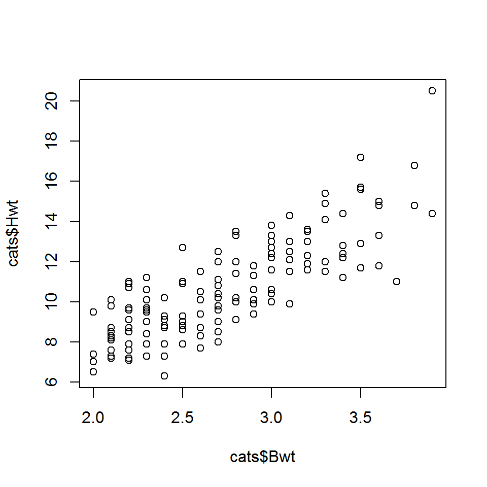

Data manipulation
Basic analysis (correlation & t-test)
Statistical Programming with R
Data manipulation
Basic analysis (correlation & t-test)
library(MASS) # for the cats data library(haven) # in/exporting data library(magrittr) # for pipes library(dplyr) # data manipulation
head(cats)
## Sex Bwt Hwt ## 1 F 2.0 7.0 ## 2 F 2.0 7.4 ## 3 F 2.0 9.5 ## 4 F 2.1 7.2 ## 5 F 2.1 7.3 ## 6 F 2.1 7.6
str(cats)
## 'data.frame': 144 obs. of 3 variables: ## $ Sex: Factor w/ 2 levels "F","M": 1 1 1 1 1 1 1 1 1 1 ... ## $ Bwt: num 2 2 2 2.1 2.1 2.1 2.1 2.1 2.1 2.1 ... ## $ Hwt: num 7 7.4 9.5 7.2 7.3 7.6 8.1 8.2 8.3 8.5 ...
fem.cats <- cats[cats$Sex == "F", ] dim(fem.cats)
## [1] 47 3
head(fem.cats)
## Sex Bwt Hwt ## 1 F 2.0 7.0 ## 2 F 2.0 7.4 ## 3 F 2.0 9.5 ## 4 F 2.1 7.2 ## 5 F 2.1 7.3 ## 6 F 2.1 7.6
heavy.cats <- cats[cats$Bwt > 3, ] dim(heavy.cats)
## [1] 36 3
head(heavy.cats)
## Sex Bwt Hwt ## 109 M 3.1 9.9 ## 110 M 3.1 11.5 ## 111 M 3.1 12.1 ## 112 M 3.1 12.5 ## 113 M 3.1 13.0 ## 114 M 3.1 14.3
heavy.cats <- subset(cats, Bwt > 3) dim(heavy.cats)
## [1] 36 3
head(heavy.cats)
## Sex Bwt Hwt ## 109 M 3.1 9.9 ## 110 M 3.1 11.5 ## 111 M 3.1 12.1 ## 112 M 3.1 12.5 ## 113 M 3.1 13.0 ## 114 M 3.1 14.3
class(cats$Sex)
## [1] "factor"
levels(cats$Sex)
## [1] "F" "M"
levels(cats$Sex) <- c("Female", "Male")
table(cats$Sex)
## ## Female Male ## 47 97
head(cats)
## Sex Bwt Hwt ## 1 Female 2.0 7.0 ## 2 Female 2.0 7.4 ## 3 Female 2.0 9.5 ## 4 Female 2.1 7.2 ## 5 Female 2.1 7.3 ## 6 Female 2.1 7.6
sorted.cats <- cats[order(cats$Bwt), ] head(sorted.cats)
## Sex Bwt Hwt ## 1 Female 2.0 7.0 ## 2 Female 2.0 7.4 ## 3 Female 2.0 9.5 ## 48 Male 2.0 6.5 ## 49 Male 2.0 6.5 ## 4 Female 2.1 7.2
cats.wider <- cbind( cats, 1:144) head(cats.wider)
## Sex Bwt Hwt 1:144 ## 1 Female 2.0 7.0 1 ## 2 Female 2.0 7.4 2 ## 3 Female 2.0 9.5 3 ## 4 Female 2.1 7.2 4 ## 5 Female 2.1 7.3 5 ## 6 Female 2.1 7.6 6
rbind(cats[1:3, ], cats[1:5, ])
## Sex Bwt Hwt ## 1 Female 2.0 7.0 ## 2 Female 2.0 7.4 ## 3 Female 2.0 9.5 ## 4 Female 2.0 7.0 ## 5 Female 2.0 7.4 ## 6 Female 2.0 9.5 ## 7 Female 2.1 7.2 ## 8 Female 2.1 7.3
plot(cats$Bwt, cats$Hwt)

Let’s compute the correlation with the cor function. According to the help file (?cor), we can use just cats[,-1] as input
cor(cats[, -1])
## Bwt Hwt ## Bwt 1.0000000 0.8041274 ## Hwt 0.8041274 1.0000000
With [, -1] we exclude the first column
cor.test(cats$Bwt, cats$Hwt)
## ## Pearson's product-moment correlation ## ## data: cats$Bwt and cats$Hwt ## t = 16.119, df = 142, p-value < 2.2e-16 ## alternative hypothesis: true correlation is not equal to 0 ## 95 percent confidence interval: ## 0.7375682 0.8552122 ## sample estimates: ## cor ## 0.8041274
Pipes are a very useful tool from the magrittr package that allow you to chain a sequence of operations in a readable and intuitive manner.
They’re also an entirely new syntax, so we will not focus on them in this course. Links on the course webpage if you want to learn more.
boys <-
read_sav("boys.sav") %>%
head()
It effectively replaces head(read_sav("boys.sav")).
Let’s assume that we want to load data, change a variable, filter cases and select columns. Without a pipe, this would look like
boys <- read_sav("boys.sav")
boys2 <- transform(boys, hgt = hgt / 100)
boys3 <- filter(boys2, age > 15)
boys4 <- subset(boys3, select = c(hgt, wgt, bmi))
With the pipe:
boys <-
read_sav("boys.sav") %>%
transform(hgt = hgt/100) %>%
filter(age > 15) %>%
subset(select = c(hgt, wgt, bmi))
Benefit: a single object in memory that is easy to interpret
Your code becomes more readable:
f(x) becomes x %>% f()rnorm(10) %>% mean()
## [1] 0.7375928
f(x, y) becomes x %>% f(y)boys %>% cor(use = "pairwise.complete.obs")
## hgt wgt bmi ## hgt 1.0000000 0.6100784 0.1758781 ## wgt 0.6100784 1.0000000 0.8841304 ## bmi 0.1758781 0.8841304 1.0000000
h(g(f(x))) becomes x %>% f %>% g %>% hboys %>% subset(select = wgt) %>% na.omit() %>% max()
## [1] 117.4
nrow(cats)
## [1] 144
cats.outl <-
cats %>%
filter(Hwt < mean(Hwt) + 3 * sd(Hwt),
Hwt > mean(Hwt) - 3 * sd(Hwt))
nrow(cats.outl)
## [1] 143
cats %>% filter(Hwt > mean(Hwt) + 3 * sd(Hwt))
## Sex Bwt Hwt ## 1 Male 3.9 20.5